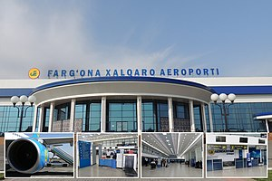

Fargʻona viloyati — Oʻzbekiston Respublikasi tarkibidagi viloyat. 1938-yil 15-yanvarda tashkil etilgan. Respublikaning sharqida, Fargʻona vodiysining janubida joylashgan. Shimoldan Namangan, Andijon viloyatlari, janub va sharqdan Qirgʻiziston, gʻarbdan Tojikiston Respublikalari bilan chegaradosh. Maydoni 6,8 ming km2. Aholisi 2023-yil 1-aprel 3 994 800 kishi. Tarkibida 15 tuman, 4 shahar (Margʻilon, Fargʻona, Quvasoy, Qoʻqon), 10 shaharcha, 164 qishloq fuqarolari yigʻini bor (2004). Markazi — Fargʻona shahri.
Fargʻona viloyati Oʻzbekistonning qadimgi madaniyat oʻchoqlaridan biri. Viloyat hududida topilgan tosh davri manzilgohlari va qoyatoshlariga solingan suratlar vodiyda odamlar eng qadimgi davrlardan beri yashab kelganliklaridan darak beradi. Fargʻona viloyatining tosh davri yodgorliklarini 1954-yil A. P. Okladnikov rahbarligidagi arxeologiya otryadi oʻrgangan. Vodiyning sharqiy qismidagi Qayroqqum, Xoʻjagʻor va Uchqoʻrgʻon makonlaridan mustye davriga oid tosh qurollar topildi. Vodiyning gʻarbiy qismidagi qadimgi tosh davri madaniyatiga oid manzilgohlar mustye davridagi Qalʼacha, Jarqoʻton va Qapchigʻay tosh qurollar ishlash ustaxonalari topilib oʻrganildi.
Fargʻona viloyatining shimoliy qismini Qoraqalpoq va Yozyovon dashtlari egallagan, janubdan Olay tizmasidan oqib tushadigan daryolarning yoyilmalari bilan oʻralgan. Janubda adirlar Olay tizmasining togʻ oldilari bilan almashinib turadi. Fargʻona viloyati yuqori seysmik zona hisoblanadi. Iqlimi kontinental. Qishi birmuncha yumshoq, baʼzan havo juda sovib ketadi. Yanvar oyining oʻrtacha harorati — 3,2 °C, iyulniki 28 °C. Eng past harorat —27,9 °C. Eng yuqori harorat 42 °C. Vodiyning gʻarbida esadigan kuchli "Qoʻqon shamoli" iqlimga salbiy taʼsir etadi. Shamolning tezligi sekundiga baʼzan 35-40 metrga yetadi. Janubi-sharqida yozda garmsel esadi.
